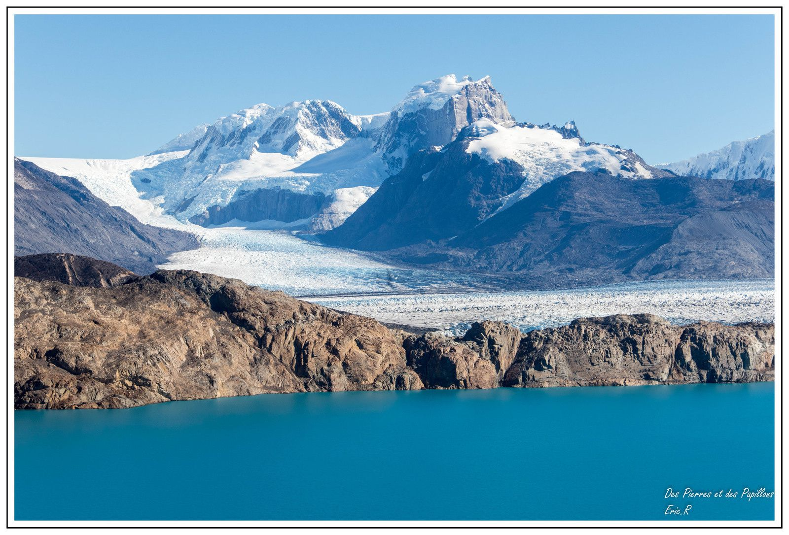

II. A story about classification
This section presents the methods and results of this
study
A. Method
In order to deal with our subject, we chose to use
images from the Landsat 5 and Landsat 8 satellites.
The advantage of this satellite, apart from its 30m
resolution in almost all its bands, is precisely its long
period of service, which allows it to be used as far
back as the 1970s. Its regular returns, its quality and
its number of spectral bands covering the visible,
infrared and thermal bands make it a preferred
choice for a temporal study. In addition, its coverage
is large, extending over 170x170km.
We were unable to obtain images from January due to cloud cover. The
2001 image has only 3% cloud cover, with a quality
similar to the previous one.
Finally, a last image dated 4 February 2017
is used. The cloud cover is 6.18%, the image
quality is also similar. No more recent images
will follow, mainly because of the cloud cover.
All these images were then radiometrically
processed to correct for atmospheric disturbances
in the images, using the metadata files provided.
Next, the bands had to be stacked into a new raster
and then came the clipping stage to match the two
glaciers. The cut-out area was defined on the basis
of the 1985 satellite image: we assumed that the
glaciers were retreating and that a certain amount
of security was therefore needed to study their
evolution. Then came the stage of classifying them.
This study will
only use the visible and infrared bands.
Three images were therefore selected for
processing (although more were downloaded and
radiometrically corrected) at a similar time of the
year in order to make a comparison. The choice
was therefore made for the summer period in the
southern hemisphere, when the glacier is at its
minimum. A first image dating from 27 January 1985
was selected. This image contains 35% cloud cover
(but does not cover the desired areas), and an image
quality of 9. It has the advantage, like the others that
will follow, of covering the two study sites in a single
file (see Annex 1 for all images).
The second selected image was acquired on 12
March 2001, 16 years later.

Perito Moreno https://img.over-blog-kiwi.com